0. Shell Script Setup
#!/bin/bash
# /opt/myapp/run.sh
set -euo pipefail
exec python3 /opt/myapp/main.pyexec はプロセスの置き換え
shell scriptが子プロセスを起動するとき，bashは生き続けながらforkした子（python3）を管理します．exec を使うと，forkせずにbashプロセス自体がpython3に置き換わります．つまり同じPIDのまま別のプログラムになります

1. Unit file の基本構造
[Unit]
Description=My Application
After=network.target
[Service]
Type=simple
User=myapp
Group=myapp
WorkingDirectory=/opt/myapp
ExecStart=/opt/myapp/run.sh
Restart=on-failure
RestartSec=5s
[Install]
WantedBy=multi-user.targetUnit file の配置場所
systemd は決まったディレクトリから unit file を読み込む．用途に応じて配置先を使い分ける．
| パス | 用途 | 優先度 |
|---|---|---|
/etc/systemd/system/ |
管理者が手動で配置するサービス．通常はここに置く | 高（パッケージ提供分を上書き可） |
/run/systemd/system/ |
ランタイム生成された一時的なunit．再起動で消える | 中 |
/lib/systemd/system/（/usr/lib/systemd/system/） |
パッケージマネージャ（apt等）が配置するサービス．手で編集しない | 低 |
~/.config/systemd/user/ |
ユーザー単位の systemctl --user 向け |
― |
優先度が高いパスに同名ファイルがあれば上書きされる．自作サービスは /etc/systemd/system/myapp.service に置くのが定石．
# 配置例
sudo install -m 644 myapp.service /etc/systemd/system/myapp.service
sudo systemctl daemon-reload/etc/systemd/system/myapp.service を配置すれば systemctl start myapp で起動できる．.service 拡張子は省略可能．
repository管理時はsymlinkを使う
unit file をGit repositoryで管理する場合，/etc/systemd/system/ にコピーするのではなくシンボリックリンクを張るのが望ましい．
# repository内の実体
/opt/myapp/deploy/myapp.service
# symlink を作成
sudo ln -s /opt/myapp/deploy/myapp.service /etc/systemd/system/myapp.service
sudo systemctl daemon-reloadメリット
- repository側を編集すれば
/etc/systemd/system/に即反映される．cpの再実行や同期忘れが起きない git pullだけで unit file の更新が完結する- repositoryがSingle Source of Truthになり，本番ホスト上で個別に書き換える事故を防げる
systemctl cat myappでリンク先の実体パスが表示されるので，どのrepositoryのファイルか追跡できる
注意点
- リンク元のファイル・親ディレクトリは
rootから読める権限が必要．/home/<user>/...配下は他ユーザーから見えないことがあるため/opt/や/srv/配下を推奨 systemctl enable myappは[Install]セクションを元にmulti-user.target.wants/配下に別のsymlinkを作る．自前のsymlinkと混同しないこと- リンク元を消すと unit が壊れる．
systemctl disable --now myappしてから削除する
daemon-reload を忘れない
symlink を張り替えた・実体ファイルを編集した直後は sudo systemctl daemon-reload が必要．これを忘れると古い定義のまま動き続ける．
[Service] フィールド解説
Type=simple
プロセスの起動モデルを指定する．
| 値 | 意味 |
|---|---|
simple |
ExecStart で起動したプロセス自体がメインプロセス．フォアグラウンドで動き続けるデーモンに使う（デフォルト） |
forking |
起動後に親プロセスがforkして終了し，子プロセスがデーモンとして残る旧来スタイル |
oneshot |
一度実行して終了するスクリプト向け．RemainAfterExit=yes と組み合わせることが多い |
notify |
プロセスが sd_notify() で起動完了を通知する．完了通知まで依存サービスの起動を待てる |
shell script を常駐させる場合は simple が基本．
User=myapp / Group=myapp
サービスを実行するOSユーザー・グループを指定する．
- 省略すると
rootで実行される（危険なので必ず指定する） - 専用のシステムユーザーを作成しておくのが定石
# システムユーザーの作成例
sudo useradd --system --no-create-home --shell /usr/sbin/nologin myapp--system はログイン不可のサービス専用ユーザーを作るオプション．
WorkingDirectory=/opt/myapp
プロセスのカレントディレクトリを指定する．
- 相対パスでファイルを開くスクリプトはここが基点になる
- 省略すると
/になり，相対パス参照が壊れることがある ~は使えない（Userのホームディレクトリに展開されない）
ExecStart=/opt/myapp/run.sh
サービス起動時に実行するコマンドを指定する．
- 絶対パスが必須（
PATHは限定的なのでwhichで確認すること） - shell scriptの場合はshebang（
#!/bin/bash）が必要 - スクリプトに実行権限が必要（
chmod +x run.sh）
# よくあるミス：実行権限を忘れる
chmod +x /opt/myapp/run.shexec で子プロセスに置き換えると，PIDがスクリプトではなくアプリ本体になり systemdのシグナル（SIGTERM など）が正しく届く．
#!/bin/bash
exec python3 /opt/myapp/main.pyRestart=on-failure
プロセスが終了したときの再起動ポリシーを指定する．
| 値 | 再起動するケース |
|---|---|
no |
再起動しない（デフォルト） |
on-success |
正常終了（exit 0）時のみ |
on-failure |
異常終了・シグナル終了時のみ（systemctl stop は対象外） |
on-abnormal |
シグナル終了・タイムアウト時のみ |
always |
systemctl stop 以外のすべての終了で再起動 |
本番サービスでは on-failure が標準．always はデバッグ時に便利だが本番には向かない．
RestartSec=5s
再起動前の待機時間を指定する．
- デフォルトは
100ms - 即時再起動ループを防ぐために数秒設けるのが推奨
- 時間の単位は
s（秒），ms（ミリ秒），min（分）など
クラッシュループ防止のために StartLimitIntervalSec / StartLimitBurst と組み合わせることもある．
StartLimitIntervalSec=60s
StartLimitBurst=5
# → 60秒以内に5回クラッシュしたらそれ以上再起動しない2. 登録・管理コマンド
# unit fileを読み込む（編集後は必ず実行）
sudo systemctl daemon-reload
# 自動起動を有効化 + 即時起動
sudo systemctl enable --now myapp
# 停止
sudo systemctl stop myapp
# 再起動
sudo systemctl restart myapp
# 状態確認
sudo systemctl status myapp
# ログをリアルタイム追跡
journalctl -u myapp -f
# 起動時のログのみ表示
journalctl -u myapp -b3. 変更時のreload手順
| 変更内容 | 必要な操作 |
|---|---|
.service ファイルを編集 |
daemon-reload → restart |
run.sh を編集 |
restart のみ |
環境変数ファイル（.env）を編集 |
restart のみ |
4. 環境変数の渡し方
[Service]
# 直接書く場合
Environment="APP_ENV=production" "PORT=8080"
# ファイルから読む場合
EnvironmentFile=/opt/myapp/.env.env ファイルは KEY=VALUE 形式で記述する．export は不要で # コメントが使える．
# /opt/myapp/.env
APP_ENV=production
PORT=8080
# DATABASE_URL=...Appendix: 用語解説
glossary:
- def: systemd
description: |
Linuxの主要なinitシステム兼サービスマネージャ．PID 1 として起動し，
サービス（unit）の起動順序・依存関係・再起動・ログ収集を一元管理する．
`systemctl` はその制御CLI．
- def: unit / unit file
description: |
systemd が管理するリソース定義の単位．`.service`（プロセス），
`.timer`（cron代替），`.socket`（IPC），`.target`（グループ）など
種類がある．本記事の対象は `.service` unit．
- def: journalctl
description: |
systemd journal を参照するCLI．`-u myapp` で特定サービスのログ，
`-f` で追跡，`-b` で今回起動分のみ表示．stdout/stderr は自動で
journalに集約される．
- def: exec（shellビルトイン）
description: |
bash等のshellで，現在のプロセスを別プログラムに**置き換える**組み込み
コマンド．fork せず同じPIDのまま実行イメージが切り替わる．systemdの
シグナルがアプリ本体に直接届くようにするため，ラッパー shell script の
最後で使うのが一般的．